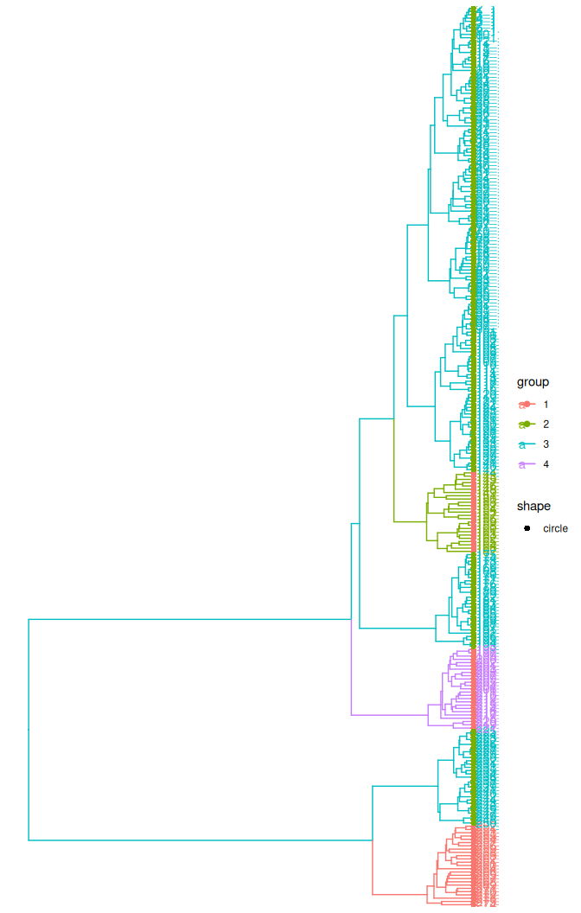
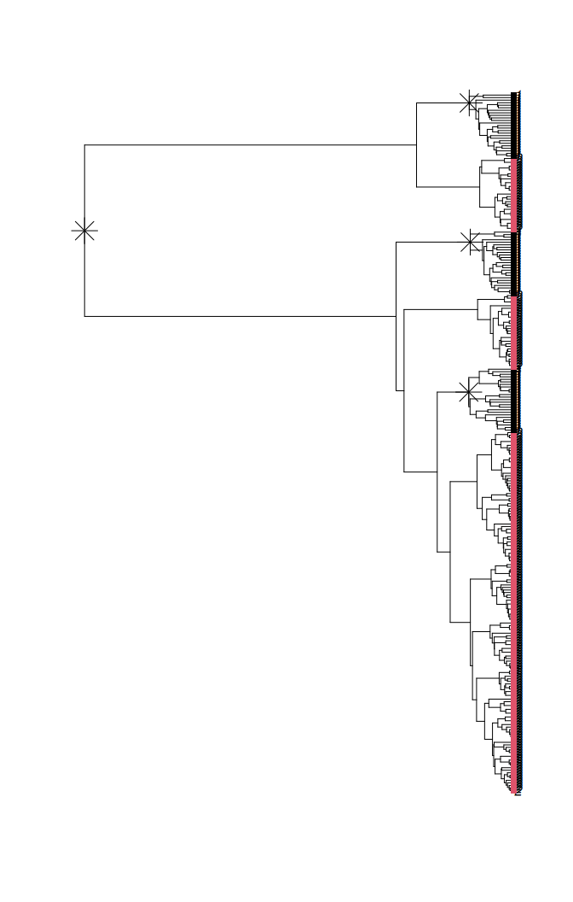

treestructure applied to structured coalescent simulation
Erik Volz
2025-09-23
Source:vignettes/treestructure.Rmd
treestructure.RmdStructured coalescent simulation
This example shows the function trestruct applied to a simulated structured
coalescent tree that includes samples from a large constant size population and
samples from three small ‘outbreaks’ which are growing exponentially.
These simulations were generated with the phydynR package.
Load the tree:
( tree <- ape::read.tree( system.file('sim.nwk', package = 'treestructure') ) )
#>
#> Phylogenetic tree with 275 tips and 274 internal nodes.
#>
#> Tip labels:
#> 1, 1, 1, 1, 1, 1, ...
#>
#> Rooted; includes branch length(s).Note that the tip labels corresponds to the deme of each sample. ‘1’ is the constant size reservoir, and ‘0’ is the exponentially growing deme.
This will run the treestructure algorithm under default setting:
s <- trestruct( tree )
#> Tree has NA or duplicated tip labels. Adding a unique id.
#> Finding splits under nodes: 276
#> Finding splits under nodes: 276 526
#> Finding splits under nodes: 276 421
#> Finding splits under nodes: 276 473You can print the results:
print(s)
#> Call:
#> .trestruct(tre = tre, minCladeSize = minCladeSize, minOverlap = minOverlap,
#> nodeSupportValues = nodeSupportValues, nodeSupportThreshold = nodeSupportThreshold,
#> nsim = nsim, level = level[1], ncpu = ncpu, verbosity = verbosity,
#> debugLevel = debugLevel, useNodeSupport = useNodeSupport,
#> tredat = tredat)
#>
#> Significance level: 0.01
#> Number of clusters: 4
#> Number of partitions: 2
#> Number of taxa in each cluster:
#>
#> 1 2 3 4
#> 25 25 200 25
#> Number of taxa in each partition:
#>
#> 1 2
#> 75 200
#> ...
#> For complete data, use `as.data.frame(...)`Plotting results
The default plotting behavior uses the ggtree package if available.
plot(s) + ggtree::geom_tiplab() 
If not, or if desired, ape plots are available
plot( s, use_ggtree = FALSE )
For subsequent analysis, you may want to turn the treestructure result into a
dataframe:
structureData <- as.data.frame( s )
head( structureData )
#> taxon cluster partition
#> 1 1_1 3 2
#> 2 2_1 3 2
#> 3 3_1 3 2
#> 4 4_1 3 2
#> 5 5_1 3 2
#> 6 6_1 3 2Each cluster and partition assignment is stored as a factor. You could use split
to get a data frame for each partition.
Suppose we want a tree corresponding to partition 1:
Parameter choice and number of clusters
Two parameters will have large influence on results:
-
levelis the significance level for subdividing a clade into a new cluster. To detect more clusters, increasep, but note that this will also increase the false positive rate. -
minCladeSizecontrols the smallest allowed cluster size in terms of the number of tips. With a smaller value, smaller clusters may be detected, but computation time will increase.
Example:
trestruct( tree, level = .05, minCladeSize = 5 )
#> Tree has NA or duplicated tip labels. Adding a unique id.
#> Finding splits under nodes: 276
#> Finding splits under nodes: 276 526
#> Finding splits under nodes: 276 421
#> Finding splits under nodes: 276 473
#> Finding splits under nodes: 276 359
#> Finding splits under nodes: 276 277
#> Call:
#> .trestruct(tre = tre, minCladeSize = minCladeSize, minOverlap = minOverlap,
#> nodeSupportValues = nodeSupportValues, nodeSupportThreshold = nodeSupportThreshold,
#> nsim = nsim, level = level[1], ncpu = ncpu, verbosity = verbosity,
#> debugLevel = debugLevel, useNodeSupport = useNodeSupport,
#> tredat = tredat)
#>
#> Significance level: 0.05
#> Number of clusters: 6
#> Number of partitions: 2
#> Number of taxa in each cluster:
#>
#> 1 2 3 4 5 6
#> 25 25 25 6 29 165
#> Number of taxa in each partition:
#>
#> 1 2
#> 75 200
#> ...
#> For complete data, use `as.data.frame(...)`In practice, clustering thresholds are always subjective and the best value of
the level parameter will depend on your application.
One way to choose an appropriate level would be to use additional data associated
with each sample. You can select the level which gives a set of clusters that
explains the most variance in the data of interest (e.g. use the cluster as a
factor in an ANOVA).
CH index
Alternatively, in the absence of any additional data, the treestructure package
supports using the CH index
to compare different levels. This statistic is based on the ratio of the
between-cluster and within-cluster variance of the time of each node
(distance from the root) and returns the level such that this ratio is maximized.
If you wish to use the CH index, pass level = NULL to trestruct, and
read documentation for the levellb, levelub, and res parameters.